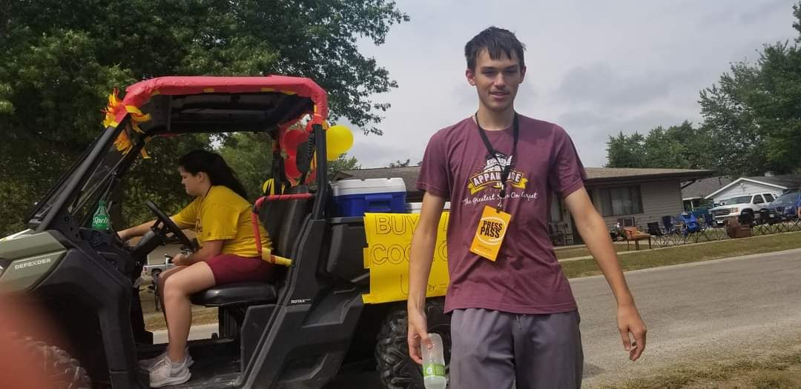
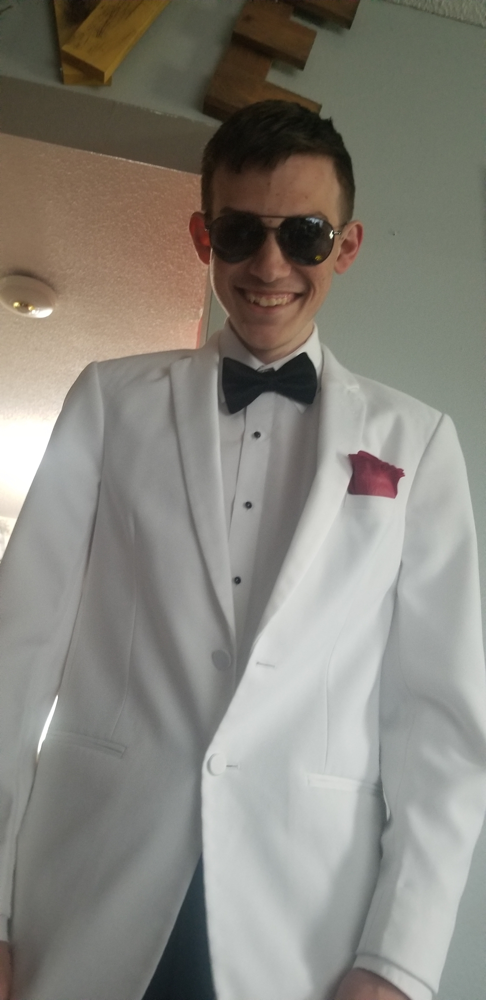
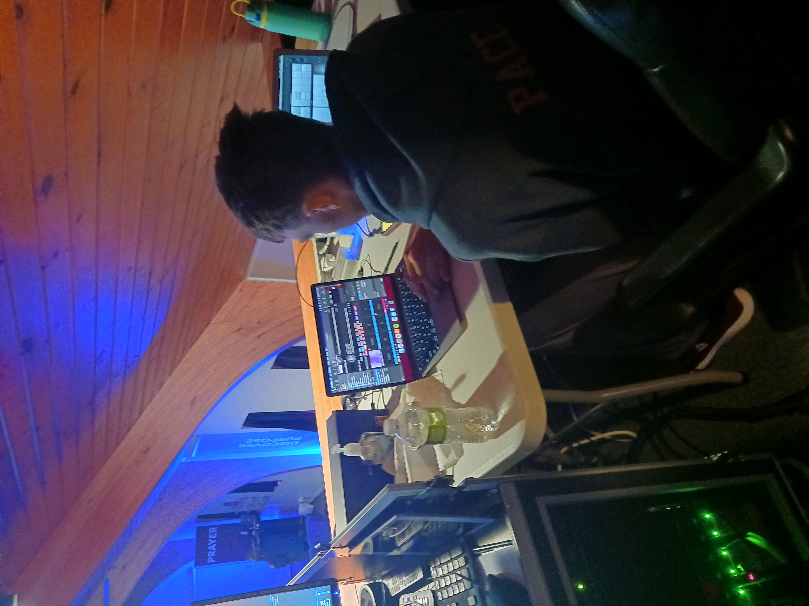

About Me
My Name is Garrett Pace, I was born on September 27, 2004.


I am a active volunteer at the Bridge Church in Centerville. I work on the production team controling the lights, and slides.

My Name is Garrett Pace, I was born on September 27, 2004.


I am a active volunteer at the Bridge Church in Centerville. I work on the production team controling the lights, and slides.
